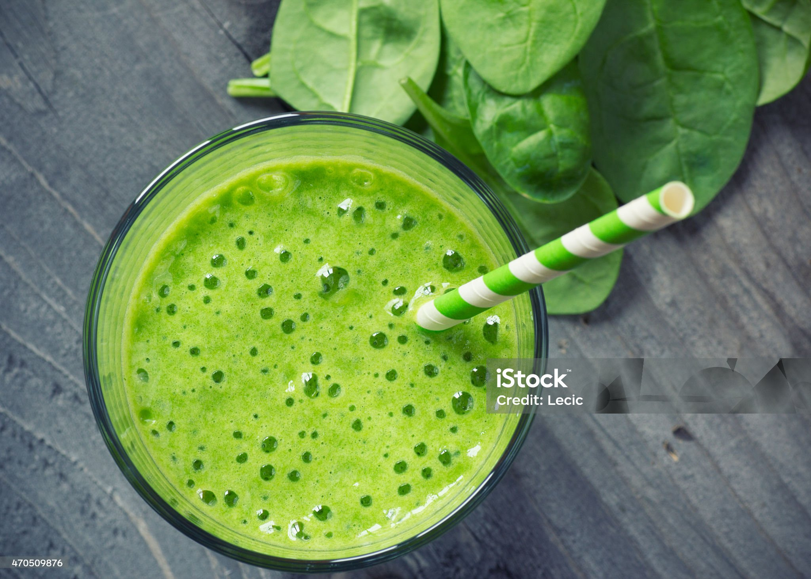

Smoothie Recipe

Description
This delicious and nutritious green smoothie is something that I look forward to every morning. It makes me feel energized and ready to tackle anything that comes my way
I know that some people have their reservations about something that looks this green. I promise you that this will be one of your new faves.
Ingredients
- Cashew Milk
- Organic Pea Protein Powder
- Vega All in One
- Nature's Organic
- Frozen Fruit
- spinach
- ice
Steps
- Pour 2 cups of cashew milk into your blender
- Add one to two scoops of protein powder
- Add 1 cup of frozen fruit
- Add one cup of spinach
- Add four to five ice cubes
- Secure lid onto the top of the blender
- Start on medium power for 30 seconds, then crank to high for another 30 seconds
- Serve in your favourite glass or to-go mug